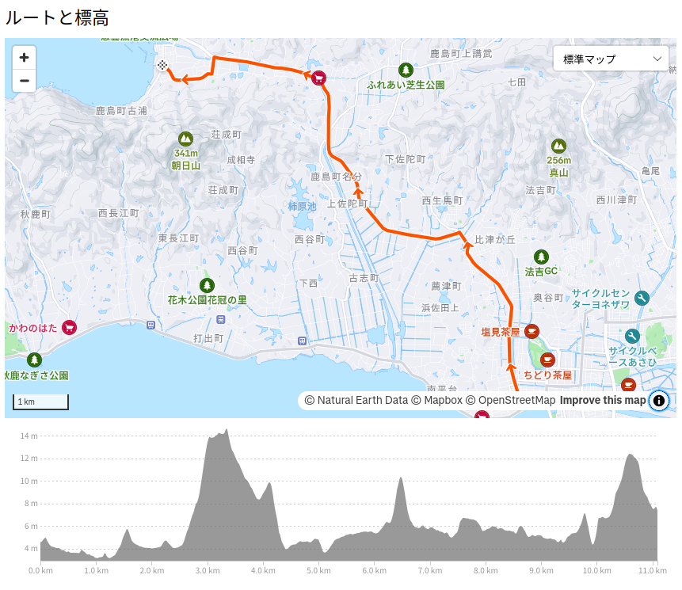

そうだ，日本海へ行こう（お散歩カメラ 2024-11-09）

立冬を過ぎましたが，皆様いかがお過ごしでしょうか。
平日朝晩の通勤ではパーカが手放せなくなったけど，日中は（自転車に乗ってると）パーカは暑いんだよねぇ。 服の調節が大変。 容量の大きいスリングバッグを買ってよかったよ。
今朝の松江市の最低気温は8.5℃，日中の最高気温が19.3℃。 快晴で東寄りの風がちょい強め。 というわけで，今日もサイクリング日和っス。
まずは八雲温泉
バードウォッチングなどもしつつ
熊野大社に到着。
いや，めっちゃいい天気。 温泉も堪能して風呂上がりの…
厳密にはフルーツオレ。
いや，前に Mastodon にフルーツ牛乳をリクエストされた（気がする）のだが，フルーツ牛乳がなかったのだ orz
そうだ，日本海へ行こう
この秋に行きたい場所が2つあって，ひとつは大橋川の東端に架かる中海大橋，もうひとつが日本海に面する古浦海水浴場。 中海大橋はこの前に制覇したので，今回は古浦海水浴場へ。
コースはこんな感じ（松江しんじ湖温泉駅→佐太神社→古浦海水浴場）。

佐陀川沿いの道を通るのでアップダウンは殆どなく，自転車通行可の歩道が使えるので比較的安全な道のりである。 というわけで，適当に昼食をはさみつつ，難なく到着。
シーズンオフなので人は殆どいない。 波も静かで快晴。 善き哉。
海を眺めながら燃料補給。
振り返ると上ったばかりの上弦の月が見えた。
ちなみに海岸の砂はすンごいサラサラで，ホイールが沈み込んで浜辺を自転車で走るのは無理でした。 私にはこんなん絶対ムリ（笑）
海水浴場周辺の街歩きはまた今度。 とりあえず今日のところは市内に戻って日没に備えよう。
今日は通過するだけ。
宍道湖まで戻った。
西から雲が出てきたよ orz コメダで日没ギリギリまで粘ってみたけど夕日は無理だった。
…帰るか。
参考

- Canon コンパクトデジタルカメラ PowerShot ZOOM 写真と動画が撮れる望遠鏡 PSZOOM
- キヤノン (Release 2020-12-10)
- エレクトロニクス
- B08L4WKDZ7 (ASIN), 4549292179675 (EAN)
- 評価
望遠鏡型コンパクトデジカメ。メモリと充電器（要 Power Delivery）は別に用意する必要がある。使い勝手はまぁまぁ。

- GARMIN(ガーミン)Edge Explore 2 Power サイクルコンピューター【日本正規品】
- ガーミン(GARMIN) (Release 2022-09-22)
- スポーツ用品
- B0BD7FGVR6 (ASIN), 0753759310660 (EAN), 753759310660 (UPC)
- 評価
Garmin 製のルート探索・ナビゲーション特化のサイコン。タッチパネル助かる。充電ポートは USB-C (not PD)。また別売りの変換ケーブルを使いモバイルバッテリからパワーマウント経由で給電することもできる。ライドタイプが「ロード」「屋内」「グラベル」の3種類しかない。 Live Segment 非対応。

- [クローム] ボディバッグ KADET BXRF_BLACK XRF (現行モデル) カデット マックス ブラック エックス リフレクティブ 15L リフレクター 防水
- CHROME
- ウェア&シューズ
- B0BQQMVWBB (ASIN), 0841916176775 (EAN), 841916176775 (UPC)
- 評価
使い勝手についてはこの動画を参照のこと。たくさんの内ポケットで仕切られているのがいい。容量は15Lで，16インチノートPCが入る。取っ手も付いていて仕事でも使えそう。3点ストラップ。防水仕様。オモテ面は光を反射しやすい素材を使っていて，夜間でもクルマから視認しやすい（らしい）。